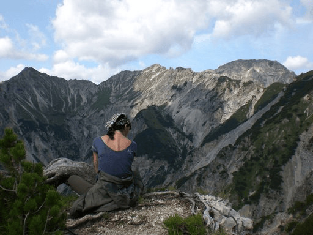

I once wanted to be a nurse.
Not because it particularly interested me. It was more that everyone wanted to be one back then, and I thought it was quite well paid. So why not me too?
Luckily for me, I wasn’t accepted. Seriously. I might still be doing it today.
Instead, I completed a four-year training as a state-certified family care worker – which I liked even less. After ten years I quit the profession. Without having anything new lined up.
I just knew: if I looked for something new first, I’d end up staying after all. So I had to force myself to change. It worked.
From family care worker to car saleswoman
I became a certified car saleswoman – and was the second best in our dealership. I had found something I was genuinely good at: Sales.
Approaching people. Listening. Finding out what they want. Inspiring them. And selling them something that suits them and makes them happy.
After that I became a media consultant for radio, TV and print. Sales again – this time with something you can’t even touch. Advertising. Airtime. Radio was cool. Print was dreadful even then. And I stayed in sales – around 30 years in total by now.
Alongside this, I kept doing further training, gaining qualifications, attending courses and completing coaching programmes. I learnt so much – and happily, I really do love learning. At some point I became a coach and trainer myself.
And then I became a manager
At times I led a team of more than 30 salespeople. That was too many. On top of that came an internal sales team and a telephone team – another 15 staff. That was definitely too many. But somehow it worked. And I learnt a lot.
For example, how lonely you can be as a manager. How suddenly all your jokes are hilariously funny.
I then spent several years working for a management consultancy, selling consulting projects. That was actually far more exciting than expected – there are so many issues a company can have.
And then came Covid.
‘I would do everything exactly the same again.’
Suddenly nobody was allowed out of the house. And my best friend Peter died. His last message to me was:
‘I’ve had such a wonderful life. I would do everything exactly the same again.’
And I asked myself whether I could say the same. Nope. I couldn’t.
I didn’t want to live in Nuremberg, where I happened to be at the time. And I wanted a different job. Then someone asked me whether I’d like to become a headhunter. I didn’t. I didn’t want to start something new yet again. But I had nothing to do anyway – Covid had brought everything to a halt.
So I gave it a try. And discovered: I’m actually pretty good at it.
Why all those detours help me today
Headhunting isn’t about laying a CV over a job description and comparing words. It’s about a genuine fit.
No sugar-coating – just plain words and transparency on both sides of the table.
I have got to know a wide range of industries from the inside – which creates a deep understanding of company cultures.
Having led teams myself and knowing sales inside out makes my assessment of candidates precise.
Years of supporting people through change help me understand what really drives people who want to move on.
I want to know why someone stays or leaves. What someone needs to do outstanding work – and why people blossom in one company and sink in the next.
And then came Transylvania

At some point I also took the small step towards Transylvania. Covid had changed recruitment processes for good anyway. Interviews were suddenly held virtually as a matter of course. And so it eventually made little difference whether I was calling from Nuremberg, Carinthia or a small village in Transylvania.
Today I live mainly here. My clients are based above all in Austria and Germany. My focus is on Carinthia, Styria and Salzburg, often in the industrial and technical sector and in mechanical engineering. But I have also successfully filled positions in the social sector.
I search for specialists and managers – in Austria, Germany and, where it makes sense for a position, beyond.
"Peter would probably be proud of me. And at the same time he’d say: ‘Sweetheart, you’re bonkers.’ He’d probably be right."
Will I one day be able to say that I would do everything exactly the same again? No idea. But I’m working on it.
Sandra Kohlweg at a glance
Headhunter, recruiter, entrepreneur
Kohlweg Recruiting & Coaching
Headhunting, direct search and placement of specialists and managers
Focus on industry, mechanical engineering, technical positions and sales; experience also in the social sector and other industries
From CFO to project management, procurement, engineering and IT, through to sales and management
Austria and Germany, especially Carinthia, Styria and Salzburg; international search for suitable positions
Around 30 years of sales experience, plus leadership, coaching, training and management consulting
Leading field sales, internal sales and telephone teams with more than 40 staff in total
Almost 25 years working in Germany
Personal direct approach, confidential search, international network and success-based placement
20% of the annual gross salary for one position, 15% for two or more positions for the same company
Invoiced only once the contract has been signed; as a rule, no candidate = no fee
Transylvania, Romania
Austria, Germany and – where it makes sense – beyond